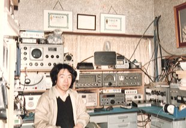
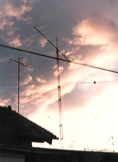
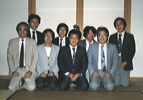

|
【 リベリアのEL2FYとQSO !】
秋のDXシーズンにQSOの期待がかけられていたアフリカがついにオープン、
10月4日08:38JSTからJH1GULなど4局がリベリアのEL2FYとのQSOに成功しました。
このQSOによって先にヨーロッパのZB2BLとQSOしていたJA1TGS、JA1BKの両局は、念願の“6m WAC”を完成しました。
アフリカ西海岸のリベリアからQRVしているEL2FYは、去る9月1日に6mが正式に免許されて運用を開始していたもの。
OPはJA1XAF・斉藤さんです。
この日、最初にEL2FYの信号を確認したのはJH1GUL肥田野さんで、08:05JST頃に50.106MHz付近で南米とQSOしているEL2FYを受信、
コールしました。しかし、このときはすぐにフェードアウトしてしまいQSOは出来ませんでしたが、
08:35JST過ぎに再び入感してきたEL2FYをコール、08:38JSTにCWでQSOしたものです。
このQSOはサイクル19以来、22年ぶりのアフリカとのQSOで、これはもちろん初のリベリアとのQSOでした。
JH1GULのQSO後、08:42JSTにJI1DLZ、08:44JSTにJA1TGS、08:45JSTにJA1BKの4局が次々にQSOし、
3局目にQSOしたJA1TGS・金子さんが、先にオープンしたZB2BLのヨーロッパに続いてアフリカともQSOし、
JAでは初の“6mで初めて6大陸とQSOした局”となりました。
EL2FYの入感と同時に、08:39JST頃には50.040MHZでEL2AVのCWによるCQも入感しJA1TGS、
JA1RJUなどがコールしましたが残念ながらこの局とはQSO出来ませんでした。
今回のオープンの5日前にJAとのQSOを期待するEL2FY・斉藤さんから手紙が届いたばかりでした。
斉藤さんもこのよう早い時期にQSO出来るとは考えてもいなかったでしょう。
今回のEL2FY、EL2AVの入感は南米周りのロングパスによるもので、信号も弱くQSOが出来たJA1エリアの中でも、
スポット的なものでした。先のジブラルタル・ZB2BLの入感と同様、今回も短時間のオープンでした。


JA初の6m・WAC完成者となったJA1TGS金子さんのシャックとアンテナ
EL2FYの50MHz・運用記
昨年10月から11月にかけてロングパスで入感、多数の局がQSOに成功したリベリアのEL2FYのアフリカ大陸の1カントリーは、
多くのJA局に"6m WAC"の夢を与えてくれました。
このJAとのQSOにいたる経過を、EL2FY・斉藤さんの「6m運用記」で紹介します。
【50MHzの電波の発射まで】
9月1日18:00Z（03:00JST）、待望のリベリア初の50MHzの電波を発射、ビーム方向はロングパスのJA向け。
ビーコンに合わせ軽快に振れるパワー計は、踊る私の心を表している様でした。
この瞬間はまさに開局して初めて電波を出すときと同じ気持ちで、感無量の思いでした。
思えば、JA-ZB2の50MHz初のヨーロッパQSOのニュースをCQ誌で知り、もしかしたらJA-ELもと思い、
50MHzの免許の可能性をリベリア郵政省・電波監理局に打診したのが、
4月12日のクーデター後のアマチュア無線再開許可と時期を同じくした5月末でした。
電波管理局長は新任したばかりでしたが、アマチュア無線家(EL2P)でもある新局長は、
仕事でも旧知の友人でした。
偶然にもリベリア・アマチュア無線連盟(LRAA)でも会長のEL2BAとアクティブなマネジャーのEL2CAが中心になり、
50MHzの許可を打診しているところでした。
幸い、我々の熱意が通じたとみえ、混信問題のないこと(リベリアではテレビ局が１局しかなく、
50MHz帯は使っていない）ITUからも電波伝搬全般にわたり異常伝搬の報告依頼があったこと。
また、この時期を逃すと10年先まで50MHzでのDX QSOの可能性は少ないこと、
などの種々の条件が考慮された結果、時期ははっきり言えないが、
秋のDXシーズン前までには免許を出す方向で検討するので、50MHz用無線機の輸入許可申請を出すようにとの通知が届いたのは、
私の日本への休暇の一時帰国も迫った6月下旬でした。
リグは一時帰国時に入手することとし、とりあえず電波監理局には輸入許可を申請しました。
HFでは"5 Band DXCC"に王手の私も、50MHzではコンテスト運用などの経験しかないため、
一時帰国した際にJA1QIY、JA1RJU、JA1SLSの各局に会い、50MHzの情報と助言をいただき、
大いに参考になりました。
8月18日、リベリア到着後は秋のDXシーズンを考え、9月1日電波発射に目標をおきHFでオールアジア・
コンテストに参加した以外はすべて50MHzの準備にあてました。
ただ、8月は西アフリカは雨季で年間5,000mm近い雨量がこの時期に集中するため、
8月30日までの休日はすべて雨のため室内作業だけしか出来ませんでした。
幸い、9月1日を前日にした8月31にようやく晴れ間がのぞきアンテナを11ｍのタワーに乗せることが出来ました。
免許の当日は電波監理局長のEL2Pも特別に出向いてくれ、落成検査も合格し、
リベリア初の50MHzの電波の発射が9月1日より認められたのです。
【初のサイクル21 JA-アフリカQSOまで】
9月1日以来、CQのビーコンを出せども出せども返ってくるのはノイズのみ。
JAのCQ誌に掲載されているDXリポートとはどうしてこうも違うのかと思いつつ、
特にJAとのオープンの可能性のある23:00z(08:00JST)から01:00zに南西(ロングパスのＪＡ方向)にアンテナを向けて、
毎日電波を出し続けました。
9月11日、ついに待ちに待った応答がありノイズの中よりPY2DM（ブラジル・サンパウロ）がコールしてきました。
QSOの途中で、私が日本人とわかり日本語でQSO。PY2DMも日系人と分りましたが初めてのコールと日本語のQSOとで2度のビックリでした。
その後、南米とのオープニングが続き、PY2XBなどJAでもおなじみの局の他、LU、CX、CEを含む約40局とQSOしました。
9月中旬に呼ばれながらQSO出来なかったZD8TCとも9月下旬になってRS59-59でQSO出来るようになり、
カリブ海方面とも00:30z〜01:30zにコンデションが最良になることも判りました。
ZD8TCのからのQSPもあって10月2日にはJA1PIG/PZ、PJ2DW、PJ2DEWなどともQSOしました。
この頃、南米北部のFY7THF(22:00z)、ヨーロッパのZB2VHF(21:00〜02:00z)のビーコンが連日のように強力に入感するものの、
QSOは出来ませんでした。JAはショートパス、ロングパスとも入感は皆無でした。
しかし、ついに待ちに待った日がやってきました。
この日は22:00z頃よりLU、PYに連続して呼ばれ、リポートは全てRS59またはRST599とFBなコンデション。
特に23:00zにQSOしたLU6DLBはRS59＋20dbの強さでした。
これでJAと南米がオープンすればあるいはと思いつつ、このQSOを終えました。
と、言いますのは、昨日19局のJAとQSOしたとのニュースをPY2XBより受け取っていたからです。
PY1YITとのQSOで南米とのQSOも一段落したため、CQのビーコンに切り替えXYL(EL2GG)とお茶を飲んでいると、
非常に弱い局が呼んでいるのに気が付きました。
急いでビーコンを切って"QRZ!?"。どうも"JH1..."の局らしい。
確実なQSOを考えもう一度"QRZ ?”。そして、ついにJH1GULのコールが確認出来、QSOに入りました。
このときは興奮と嬉しさで、電鍵を持つ手も少し震えていました。
10月3日23:38z(日本時間10月4日、08:38JST)、ついにサイクル21で初のJA-アフリカのQSOに成功したわけです。
その後、JI1DLZ、JA1TGSと順に応答しQSO。
その後も何局かに呼ばれたもののコールサインがはっきりせず、コンデションも下降。
そのなかからJA1BKだけがはっきり確認出来QSO。
その後JA1VO?に応答したものの返事がなく、再度コールするも確認できないままQSOに至りませんでした。
約10分弱のオープンで結局この日は4局とQSO出来ただけでした。
この頃、EL2AVは私のCQのビーコンに応答してきたJH1GULを聞きつけ、50.040MHzでCQを出したものの、
誰にも呼ばれなかったと残念がっていました(実際には、後で分ったことですがJA1TGS、JA1RJUなどがコールしたとのこと。
EL2AVのところではノイズもありコピー出来なかったようです)。

EL2FYと同じ初日に入感したEL2AV
この日の受信リポートに対するQSL
【驚異のJA 250局QSO】
10月3日以降のJAとのオープンはJA4、5、6、7日と続くものの、西日本を中心としたわずかなオープンであり、
このことから、定説通りロングパスのDXは南に有利なのかと思いつつ、東・北日本とのオープンを期待しながら、
連日午前2時頃までワッチにつとめました(ローカル時間はGMTと同じなので深夜のワッチは翌日にこたえましたhi）。
10月10日23:38zに再びJAがオープン。
この日は珍しくJA2エリアからのオープンで信号も強く相次いでJA2エリアとQSO。
JA1エリア以北も開くのではと期待しながらQSOを続けるうちコンデションは急上昇、
リポートもRST599が返ってくるようになりました。少しでも多くの局とのQSOを考えSSBに切り替えました。
01:30z(10:30JST)までの約１時間50分で JA1、2、3、4、5、6、7、0の各エリア、計147局とQSOしました。
このあまりにもすばらしいオープンは、28MHzのオープンと比較しても引けを取らないほどで、
まったく信じられない思いでした。
ただ興奮のうちにこの日の約2時間が過ぎてしまいました。
この日はEL2AVも01:10z頃よりJAのオープンに気づき、8局のJAと初QSOしZD8TCも、00:10zにJA4MBMを最初に、
3局のJAと初QSOしたとのことです。
特にZD8TCは私がたくさんのJAとQSOするのを聞いており、彼も同様にたくさんのJAを聞いていながら、
送信機の調子が悪くQSO出来ず残念だったと言っていました。
翌11日は、前日ほどではないもののこれまたFBなコンデションで、西日本を中心にオープンして、
JA2、3、4、6、9の各エリア、66局とQSO出来ました。
特にJA9エリアは1局ながら初QSOでした。
10月12日は3日続けての大オープンを期待しましたがJA8RC、JA8VOMの2局とQSOしただけで、
02:00zまでワッチしたものの、全くNGでした。
この日のJA8とのQSOでAJDを完成しました。
その後のコンデションは期待に反し大オープンも無く、10月14日、17日、18日と弱いオープンがあった
だけでした。
EL2AVは、私が不在中の10月19日にVE1ABXを初めとしてVE1、W1とQSO。
この頃は、昼の北米、夜中のJA、南米と寝る時間もありませんでした。
10月中旬の全く思いがけないFBなJAとのオープンも、
11月に入るとともにコンデションも急激にダウンしてしまい、
11月2日の西日本とのオープンを境にほとんどJAが入感しなくなってしまいました。
10月のオープンの素晴らしさは運用するものにとって、50MHzをあたかも28MHzと錯覚させるほどで、
私も28.885MHzの6mの連絡周波数でのJAとのQSOで"目標JA、1,000局"との言葉も出たほどでした。
ところが、11月にはいるとJAからW、W/カリブ海とEUといった横のパスは大変FBになったものの、
西アフリカ−アジア(JA)のパスは期待に反しほとんどNGになってしまいました。
このことは、50MHzの伝搬の一つの“謎”を解く有力な鍵になりそうです。
コンデションが変わって、水を得た魚のようにヨーロッパのたくさんの局がW、VE、
カリブ海の局と50/28MHzで興奮しながら、
クロスバンドQSO(註：当時は多くのヨーロッパの国では6mが許可されていなかった)をしているのを聞きますと、
他局の事とはいえ、非常に嬉しいものです。
クロスバンドQSOは、JAではあまり耳慣れない言葉かも知れませんが、南、北アメリカ、ヨーロッパの局の間では、
免許の関係もあり非常にポピュラーです。
私もビームをヨーロッパ方面に向けるときは、50MHzの自分の周波数の他にクロスバンドQSOのため、
28.885MHz付近は必ず聞く事にしています。
50MHzの免許局の少ないヨーロッパ局は、良く28MHzを使って呼んでくる事が多いからです。
さて、JAの皆さんがもっとも気になるヨーロッパの50MHzのアクティビティですが、
JAでも有名なZB2BL、EI6ASは非常にアクティブで、毎日のように50/28MHzの両バンドで聞こえています。
特に、ZB2BLは週末には01:00〜02:00zにJA向けに50.035MHzでCQを出しているのが、
ときどき聞かれましたが、既に11月に入ってからでしたので少し遅かったようです。
11月に入り、いったん下がったコンデションも、中旬後半から再び持ち直しJA6が入感したり、
VS6BE(註：VR2)がZD8TCにRS59で入感するなどしていました。
EI6ASは50.025MHzでJA向けにQRVしていますし、他にEI2W、I5TDJ、
SZ1DH(SV1DHの50MHzの特別コール）等もアクティブです。
特に、I5TDJは彼のビーコン周波数以外でも呼んでくる事がありますので注意が必要です。
正式な免許なのか分かりませんがG6SIX、PA0RYSともQSOしました。
JAでは今回のEL2FY(約300局)、EL2AV(約30局)、ZD8TC(約30局)とのQSO成功により、
WACのためにあとヨーロッパを残すのみの局が増えたことと思いますが、
ぜひヨーロッパとのQSOも成功されるよう願っています。
◎ エリア別 1st QSO局
1 JH1GUL 6 JR6MGG
2 JA2GHT 7 JA7UDE
3 JA3EGE 8 JA8RC
4 JA4MBM 9 JA9PMN
5 JA5GAM 0 JA0AGA

EL2FY帰国歓迎会に集合した、1エリアの各局とJA初QSO局となったJH1GUL肥田野さん
斎藤さん（前列中央）から、アフリカみやげの黒炭の置物をプレゼントされた
【EL2FYからの運用報告(2)】
JA局と並んで多くの50MHz局のいる北米(W、VE)のパスを期待していたのですが、
JA-太平洋のようなFBなパスは無く、しかもオープンしても強力な信号はなかなか聞かれず、
JA局の信号の方がよほど強力でした。
当地からは、南米の南部（LU、PY、CX）とのオープンを除き、他はオープンする地域が非常に狭く、
かつコンデションの変化が激しいようです。
このことは、JAとのオープンにも言える事で、
日本列島などビーム角度にすればほんの僅かである事にも関わらず、
同時に全エリアのオープンなどありえません。
極端なときは、点と点といったようなオープンもあるようです。
このことは、WやVEの場合、一つの州がJAほどあることから、JAとWの局数が同程度でも、
局数の密度は大きな違いがある訳で、北米方面の局数の伸びない理由の一つとも考えられます。
ZD8TCと当局を比較した時にも、この地域性のことは顕著に現れており、カリブ海がZD8TCに59で入感しても、
私の所では全く入感しないこともあります。
反対に、JAが私の所に入感してもZD8TCには全く入感しなかったり、
数えきれないほどの事例があります。
僅か10kmと離れていないEL2AVと私の間でもこれと同じ様な事がありますので、
50MHzはまったく気が抜けないバンドと言えそうです。
ZD8TCは、KH6IAAとのQSOによりWACを完成しました。
これはおそらく1stアフリカではないかと思って居ます。
私はまだオセアニアが残っており、KH6IAA、H44PTとスケジュールを持っていましたが、
まだQSO出来ていません。
最近6mのQRVを確認した新しいカントリーは、J79A、C6ADVで、
アクティブな局としてVP2VGR、KP4EOR、KV4FZ、PJ2DW、PJ2DEW、XE1GE、DL3ZM/YV5、YV4UY、HC1BI、
ZS3E、ZS5TR、ZS6LNなどです。
1月中旬となり6mのDXシーズンも間近と思われますが、当地ではPY2XBとFY7THFのビーコンは毎日のように入感し、
冬とはいえ決して6mは死んではいないようです｡
12月のDXはFM7ADのニューカントリーの他に、I5TDJ、PY、LU、YV、W、VE等のQSOでした。
この他に8P6KXなどから受信リポートをもらいましたが、2wayのコンタクトは出来ませんでした｡
8P6KXはICOMのハンディ・トランシーバー(3W)に3エレ八木との事ですが、
秋にはRS59で入感している時もありました。
秋のコンデションとはだいぶ異なるようです。12月は当方よりは届くものの、先方からはNGでした。
現在までのDX・QSOは、W、VE、KV4、KP4、FM7、VP2G、YV、HC、PZ、PY、CX、CE、ZP、LU、PJ2、ZD8、
5Z4、EL、ZB2、EI、I、JAの22カントリーとPA0、Gなど約700QSOです。
受信用プリアンプもアンテナ直下に設置し、昨年のシーズン中トラブルで使用出来なかったIC-551Dの到着を待って、
2月よりの春のシーズンに備えています。
プリアンプはWとのQSOに使用しましたが、なかなか良いようです。
これがあれば少しはJAの10W局のQSOも増えるのではと思っています。
昨シーズンは、FT-101EにFTV-650Bだけでしたのでパワー不足とスプリットが5KHzしか出来なかったため、
QSOの能率が悪かったのではと思っています。
10KHz以上のスプリットが可能になればJA側の了解度も上がることと思いますし、
こちらも弱い局を拾えると思います。
50MHzの免許も最近IC-551Dで更新しました。
こちらでは、今年よりアマチュア局の免許制度が変わり、送信機ごとに免許が必要になりました。
しかも値上げになり、1装置$20です。
HF帯と2mのリグを含め年間$60で少し高い気もしますが、大好きな無線のためにはやむ負えないと思っています。
6mの周波数は多少動いても(50.5MHzくらいまで)良いとの内示ももらいましたので、
昨年よりはもう少しいろいろなことが出来そうです。
ZD8TCは80m〜6mの6バンドWACを、私は160m〜10mの6バンドWACを完成しています。
今年はぜひ“6m WAC”を完成したいものです。
現在、50MHzによるWAJAの未QSO(未QSL)は次の県です。
JA1 栃木、山梨 JA6 長崎
JA3 滋賀、和歌山 JA7 青森、岩手、秋田、山形
JA4 島根、鳥取 JA9 福井、石川
JA5 香川、愛媛 JA0 長野
EL2FY/EL2GG斎藤さんご夫妻
◎ 次に紹介するのは、EL2FY・斎藤栄一さんが6mで日本とQSOする前に交換した手紙と、インタビューの
内容です。斎藤さんの6mに掛ける情熱が伝わって来ます。
【EL2FY･斎藤さんからの便り】
「･･･日本での休暇も終え、当地には8月18日到着し、さっそく郵政省電波管理局長と6mの免許について打
ち合わせをもち、ついに9月1より、6mの特別免許がおりました。
8月28日の申請に9月1日より6m運用OKの答えをくれたものです。
これは、電波管理局長がアマチュア(EL2P)であり、非常に理解があったためと思われます。
この免許により、私がリベリアで初めての6mの免許局となり、
さっそく9月1日夜より50.030MHzでビーコンの発射を始めました。
本免許は、電波伝搬テストを兼ねた特別免許となっており、私の滞在期間や、コンデションを考慮して、
免許の期限は1980年9月1日より1981年5月30日までとなっています。
私の他にもリベリア無線連盟のクラブ局とEL2AVの2局が免許申請中であり、
これらの局にも免許が与えられる予定です。
6mの運用が問題ないとの実績さえ出来れば、運用期間の延長も可能と思っています。
運用周波数については何はともあれ免許をもらうことを優先したため、
免許の与えやすいスポット免許となり、現在50.030MHzと50.050MHzの2波となっておりますが、
上記の2局の免許を待ち、ゆくゆくは50.000〜50.500MHzのバンドとして、
割り当てを得るよう努力するつもりです。
さて、運用状況ですが、8月31日アンテナ工事終了、リグのセッティングを9月1日に行い、
同日夜より電波を発射。
初めての西アフリカ大陸よりの6mの電波発射であり、なんとも言えない気持ちでした。
9月1日から9月10日まではまったくNGで、聞こえるのはノイズばかり。
今頃JAではVK、KG6あたりが開けているのでは、と思いながら...ヨーロッパに6mの免許があれば、
JAの様にQSO出来るのに...と、ワッチを続けました。
9月11日、ついにノイズの中から当局のCQのビーコンに応答があり、
00:10Zにブラジル・サンパウロのPY2DMにコールされ、2WAYのCW、SSBで、
約30分間のQSOをしました。特にQSO終了の00:40z頃にはPY2DMの信号は59+10dbとなり、
途中で発生したQRNもまったく問題になりませんでした。
しかも、QSOしているうち、PY2DMは日系人とわかり日本語でQSO、2度ビックリ。
世界の狭さに感心したりしました。
尚、ビーム方向は南西で日本へのロングパスの方向です。
その後、LU8MBL、CX8BE、ZD8TC、CE3DZなど1st everを含む30局とQSOしました。
この分ですとJAとのQSOも大いに期待出来そうです。
他に、PJ2DEW、KP4EORからの受信リポートをPY2XB経由で受け取っています。
また、CP8AZも私の信号を受信したとの話も、PYの局より伝わってきています。
尚、ZD8TCはCWのみ、PJ2DEWはCWはNGとのこと。
さて、JAとのQSOの可能性ですが、まだ運用を始めて間もなくはっきりしたことは言えませんが、
10月か11月頃には出来るのではないかと考えています。
今までの南米とのQSOは相手が入力50Wに5エレクラスですとRS59+になります。
南米と日本が開けさえすれば、時間帯がJAと南米も最もよい時間であり（23:00〜01:00z）、
EL-南米-JAとオープンする可能性もありそうです。
今年の春のZB2、KP4もこのパスと考えられます。
EL-南米のパスは、JA−YB(インドネシア)、HS(タイ)のパスと同等と考えられますので、
EL-南米のパスは比較的良好と考えられます。
EL-JAの可能性は大ですから、ぜひ50.030MHzのビーコンをワッチするようにして下さい。
JAの土、日の23:00〜01:00z(08:00〜10:00JST)および、07:00〜10:00z(16:00〜19:00JST)には、
CQのビーコンとしてシャックの前でワッチしたいと思っています。
秋のコンデションでは、JA局は23:00〜01:00zにはW方向にビームを向けがちと思いますが、
南東方向にも注意して下さい。
【EL2FY・斉藤さんに聞く】
西アフリカのリベリアから近々6mでのQRVが噂されている、EL2FY(JA1XAF)斉藤さんが、
7月中旬から約1ヶ月間、休暇で一時帰国されたのを機会に、リベリアでの6m運用の可能性などについて、
お尋ねしてみました。(1980年9月号V-UHF BAND NEWSから: 聞き手・JA1RJU)
---リベリアにはお仕事で行かれるわけですか？
そうです。日本国政府派遣の電気通信専門家として、リベリア国の電々公社に当たるところに派遣されているわけ
で、無線伝送部門の技術顧問をしております。
---日本人は他にどなたか居りますか？
技術顧問としては私だけです。
---早速ですが、斉藤さんは永いことリベリアに滞在しているわけですが、EL2FYを開局したのはいつ頃ですか？
1975年に開局しました。現在まで、HFで1万局以上QSOしています。
---ところで、こんど6mにもQRVされるとのことで、JAの各局が期待している訳ですが、リベリアでの6mの免許
はどのようになっているのですか？
リベリアは、第一地域なので6mバンドというのはアマチュアにはないんです。
しかし、今回特別免許の運動をしていましたところ、リベリア国の郵政省から、7月10日頃に、
50MHzの機械の輸入を許可すると言ってきました。
輸入を許可すると言ってきたことは、50MHzの運用を行ってもいいと理解できるわけです。
もちろん、運用についてはプロパゲーション・テストのためと言うことになると思います。
---運用できる周波数は？
一応、当局に働きかけを行ったときには、50.000MHz〜50.500MHzを希望しました。
---リベリアでは、この周波数は使われていないんですか？
ええ、この辺の周波数は全然使われていません。
第一地域では、6m帯はテレビ放送の周波数帯になっているのですが、
リベリアでは、EL-TVという10KW出力の局が１局有るだけなんです。
周波数もずっと高いところを使っています。
たしか、ヨーロッパ・チャンネルの6ch（E-6、182.25〜187.75）を使っていたはずです。
アメリカ向けの輸出用テレビでは、7chで受信出来ました。
方式はSystem−Bの走査線が625本のものです。放送時間は18:00〜23:00LMT(LMT＝現地時間)です。
---その他の周辺の国はどうですか？
TU(Ivory Coast)や6W8(Senegal Rep.)が開発の進んでいる国ですが、
テレビ放送の方式はリベリアとは違っています。
---ところで、6mのリグはどのようなものになりますか？
IC-551Dの100W機をこんど手に入れましたので、これを使う予定です。
このほかに予備として、FT-101にFTV-650Bのトランスバーターがあります。
アンテナはマスプロの4エレを自立の11ｍ高のタワーに上げようと思っています。
もちろん、ビーム方向はロングパスのJAに向けます。
---楽しみですね。ところでロケーションは？
ロケーションは良いですよ。
特にロングパスの方向は、太西洋の水平線が見渡せる所です。
100ｍぐらいの所に波打ちぎわが見えます。ショートパスの方向はジャングルですが...。
---オープンするとすれば、今年の春のZB2や、KP4などのようにロングパスが有力なんですが、
HFの伝搬をみてもロングパスのリベリアはよく入感していますね。
ロングパスでは、JAとのパスは大変FBです。
とにかく、JAと6mでコンタクトするために運用しますよ。
ビーコンも常時出したいと思っています。周波数はどの辺がいいですか？
---ZB2VHFが50.035MHzですから...同じ方向のビームですから、周波数も近いところで、
50.030MHzあたりが良いんじゃないですか。
とにかく、ビーコンが入感したら電話して下さい。
08:00〜12:15Zと14:00〜17:30Zには事務所にいますが、不在のときでもXYL(EL2GG)がいますから...。
会社に連絡がきてからでも、すぐに戻れる距離です。
---リベリアにはいつ頃まで滞在の予定ですか？
予定では来年の5月末までなんです。ですから、今年の秋と来年春がチャンスだと思っています。
---今年の春にオン・エア出来ていればコンタクトの可能性があったかも知れませんね。
そうですね。残念ながらWARC-79が終わるまでは、許可出来なかったようなんです。
---ところで、リベリアというと、われわれが先日QSOしたリベリア船籍の船から出ていたA8KQが記憶にあるんですが、
この局についてどう思いますか？
この局はアマチュア局ではないと思いますね。
リベリアではアマチュア局にこのようなコールは割り当てていませんし、
もちろん本国でも6mは許可していないわけです。
船舶局か勝手にコールを作ってオン・エアした局ではないかと思います。
リベリアに帰ったら調べてみたいと思います。
---9月には、EL2FYのビーコンが6mで発射されるわけですが、
コンタクトに成功するように我々も大いに期待を持って、ロングパスのリベリアにビームを向けたいと思います。
どうもありがとう御座いました。
【1980年7月26日記 JA1RJU】
● リベリアから、EL2FYとしてご活躍されたJA1XAF・斎藤栄一さんは1995年5月11日、亡くなられました。
多くの6mマンに夢を与えてくれた斎藤さんに感謝するとともに謹んでご冥福をお祈り申し上げます。
|